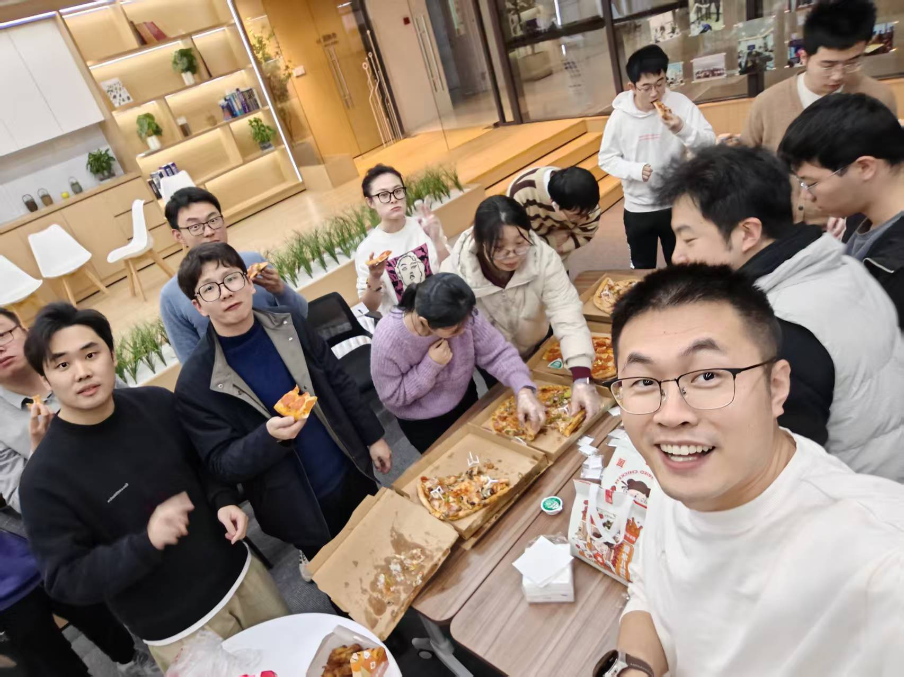
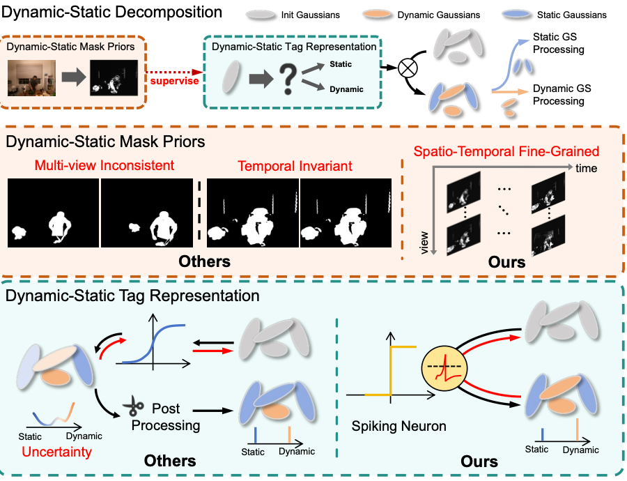
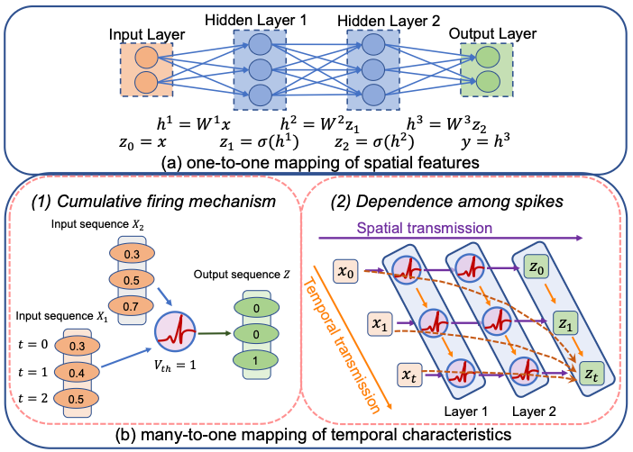
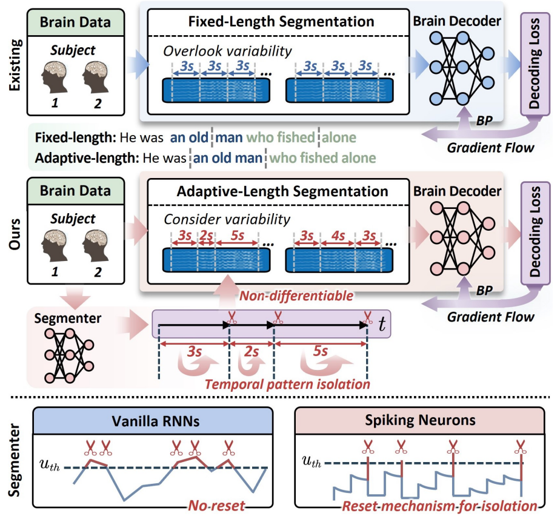
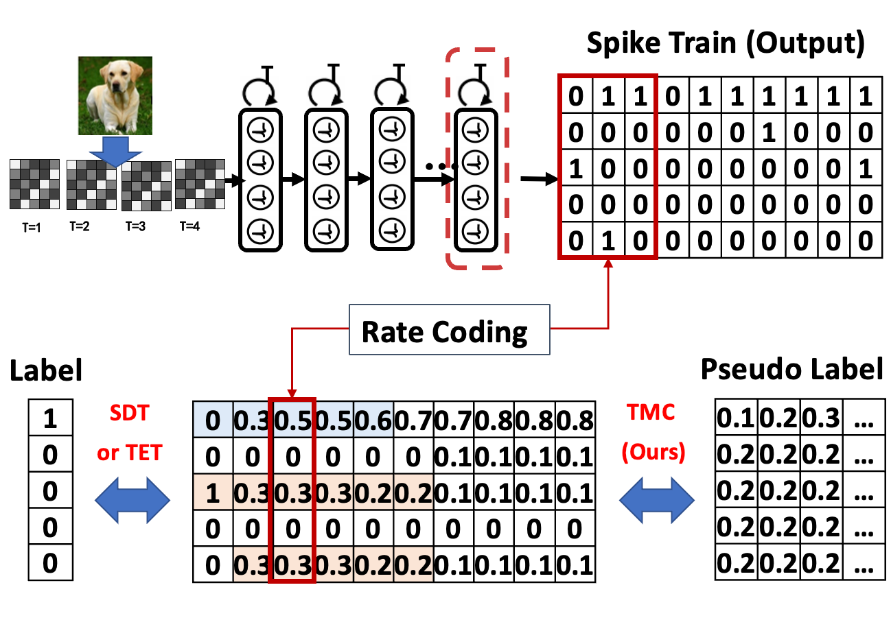
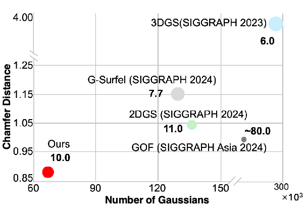
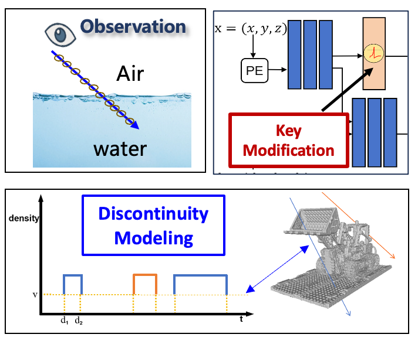
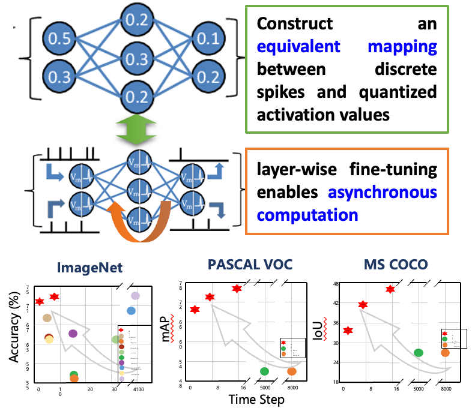
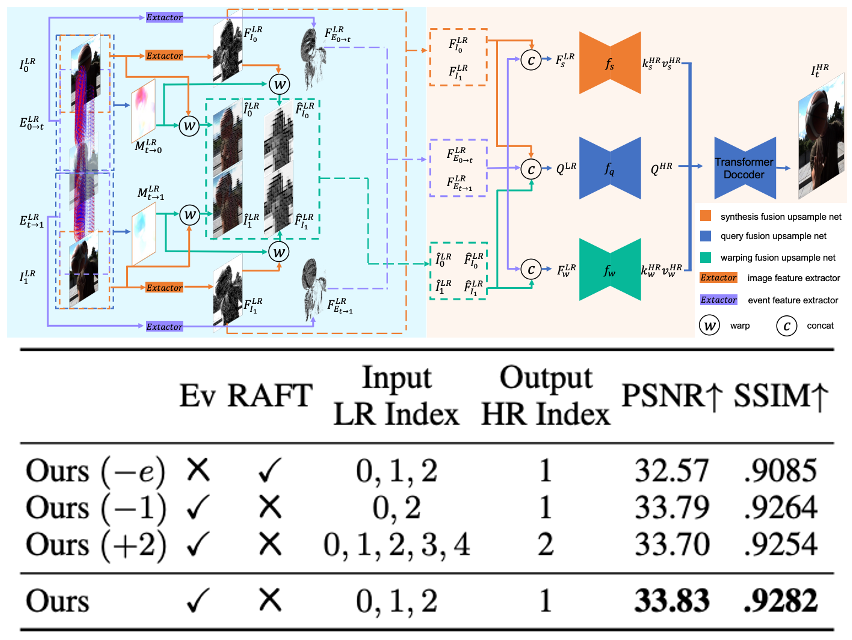

Qian Zheng 郑 乾Assistant Professor
College of Computer Science and Technology, |
 |
I'm an Assistant Professor (百人计划研究员) at the College of Computer Science and Technology, Zhejiang University, and work closely with Prof Gang Pan and Prof Huajin Tang. I received my BEng (2011) and PhD (2017, supervisor: Prof Gang Pan) degrees in computer science from Zhejiang University. From 2018 to 2022, I was a Research Fellow at the ROSE Lab, Nanyang Technological University and worked closely with Prof Boxin Shi, Prof Xudong Jiang, and Prof Alex Kot.
I have co-authored over 80 peer-reviewed papers. I was a recipient of the ACM Rising Star Award (Hangzhou Chapter, 2024). I currently serves as an Associate Editor for Pattern Recognition (PR), IEEE Transactions on Cognitive and Developmental Systems (TCDS) , and Neurocomputing.
My research interests include Neuromorphic Computing, Computer vision, Machine Learning, with special emphasis on: Spiking Neural Networks (e.g., training methods, spiking LLM) and Neuromorphic Camera (e.g., event camera based low-level vision).
常年招收: 博士后、博士、硕士、本科实习生，欢迎邮件联系。希望你：
如果三天内我没有邮件回复，代表我没有相应的博士硕士指标、或没有合适的科研项目或方向。If no reply is received within three days, it indicates that I currently have no available openings for PhD or Master's candidates, or no suitable research projects or topics.
🔥 News [Click to Expand]
📚 Selected Works Since 2023 [SNs and SNNs] [Event Camera based CV]
Spiking Neurons (SNs) and Spiking Neural Networks (SNNs)
|
 |
Dynamic-Static Decomposition for Novel View Synthesis of Dynamic Scenes with Spiking Neurons Lingyun Dai#, Zehao Chen#, Yan Liu, Shi Gu, Peng Lin, De Ma, Huajin Tang, Qian Zheng*, Gang Pan The IEEE/CVF Conference on Computer Vision and Pattern Recognition (CVPR), Jun 2026 [Project]
|
|
 |
Robust Spiking Neural Networks by Temporal Mutual Information Mengting Xu, Shi Gu, Peng Lin, De Ma, Huajin Tang, Qian Zheng*, Gang Pan The IEEE/CVF Conference on Computer Vision and Pattern Recognition (CVPR), Jun 2026 [Project]
|
|
 |
S³: Spiking Neurons as an Isolating Segmenter for Brain Signal Decoding Qian Zheng#*, Ming Chen#, Sha Zhao, Shi Gu, Peng Lin, De Ma, Huajin Tang, Gang Pan* Proceedings of the AAAI Conference on Artificial Intelligence (AAAI), Feb 2026 [paper][code]
|
|
 |
Training High Performance Spiking Neural Network by Temporal Model Calibration Jiaqi Yan, Changping Wang, De Ma, Huajin Tang, Qian Zheng*, Gang Pan* International Conference on Machine Learning (ICML), Jul 2025 [paper][code]
|
|
 |
Spiking GS: Towards High-Accuracy and Low-Cost Surface Reconstruction via Spiking Neuron-based Gaussian Splatting Weixing Zhang#, Zongrui Li#, De Ma, Huajin Tang, Xudong Jiang, Qian Zheng*, Gang Pan arXiv preprint arXiv:2410.07266 (Arxiv), Oct 2024 [paper][code]
|
|
 |
Spiking NeRF: Representing the Real-World Geometry by a Discontinuous Representation Zhanfeng Liao, Yan Liu, Qian Zheng*, Gang Pan* Proceedings of the AAAI Conference on Artificial Intelligence (AAAI), Feb 2024 (Oral) [paper][code][VALSE 论文速览]
|
|
 |
Fast-SNN: Fast Spiking Neural Network by Converting Quantized ANN Yangfan Hu#, Qian Zheng#, Xudong Jiang, Gang Pan* IEEE Transactions on Pattern Analysis and Machine Intelligence (TPAMI), Dec 2023 [paper][code]
|
Event Camera based Computer Vision

|
eRetinexGS: Retinex Modeling for Low-Light Scene Enhancement via Event Streams and 3D Gaussian Splatting Haojie Yan, Zehao Chen, Yan Liu, Shi Gu, Peng Lin, De Ma, Huajin Tang, Qian Zheng*, Gang Pan* The IEEE/CVF Conference on Computer Vision and Pattern Recognition (CVPR), Jun 2026 [Project]
|

|
E-NeMF: Event-based Neural Motion Field for Novel Space-time View Synthesis of Dynamic Scenes Yan Liu, Zehao Chen, Haojie Yan, De Ma, Huajin Tang, Qian Zheng*, Gang Pan* International Conference on Computer Vision (ICCV), Oct 2025 [paper][code]
|

|
EvHDR-NeRF: Building High Dynamic Range Radiance Fields with Single Exposure Images and Events Zehao Chen, Zhanfeng Liao, De Ma, Huajin Tang, Qian Zheng*, Gang Pan* Proceedings of the AAAI Conference on Artificial Intelligence (AAAI), Feb 2025 [paper][code]
|
|
 |
EvSTVSR: Event Guided Space-Time Video Super-Resolution Haojie Yan, Zhan Lu, Zehao Chen, De Ma*, Huajin Tang, Qian Zheng*, Gang Pan Proceedings of the AAAI Conference on Artificial Intelligence (AAAI), Feb 2025 [paper][code]
|

|
Event-ID: Intrinsic Decomposition Using an Event Camera Zehao Chen#, Zhan Lu#, De Ma, Huajin Tang, Qian Zheng*, Gang Pan* ACM International Conference on Multimedia (MM), Oct 2024 [paper][code]
|
🌏 Activities
- Associate Editor
- Pattern Recognition (2026.2 - present)
- IEEE Transactions on Cognitive and Developmental Systems (2024.12 - present)
- Neurocomputing (2023.10 - present)
- Area Chair
- BMVC 2026
- ICME 2026
- MIND 2025
- PRCV 2023, 2025, 2026
- Reviewer
- TPAMI, IJCV, TIP, TNNLS, TCSVT, TMM
- CVPR, ICCV, ECCV, ICML, ICLR, SIGGRAPH, AAAI, IJCAI, ACM MM
- Committee Member
- Executive Area Chair Committee of the Vision And Learning Seminar (2024/2025 副主席委员, 2026 主席委员)
- The Branch of Consciousness Science of the Chinese Cognitive Science Society (中国认知科学学会意识科学分会委员)
- Young Professionals Committee of Chinese Association for Artificial Intelligence (中国人工智能协会青年工作委员会委员)
- The Branch of Brain-computer Interface & Interaction of Chinese Neuroscience Society (中国神经科学学会脑机分会委员)
- Conference Organizer
- Publicity Chair: BMVC 2026, VALSE 2026
- Tutorial Chair: ChinaBMI 2025, VALSE 2023 (5000+ attendees)
- Poster Chair: VALSE 2025 (5900+ attendees)
- Registration Chair: ChinaBMI 2024 (1000+ attendees)
- Finance Chair: IEEE CIS-RAM 2024
- APR Chair: VALSE 2024 (5000+ attendees)
- Workshop Organizer
- The Second Young Scholars Workshop on Neuromorphic Computing, MIND 2025
- Brain-inspired Intelligence and Technology , Academic Conference of China Instrument and Control Society 2025
- The First Young Scholars Workshop on Neuromorphic Computing, IEEE CIS-RAM 2024
- Brain-Inspired Vision and Learning, VALSE 2024
- Others
- CVPR 2025 Outstanding Reviewer (711/12593)
- CVPR 2024 Outstanding Reviewer
- ACM Rising Star, Hangzhou Chapter, 2024
- Excellent Research Fellow 2021, Nanyang Technological University (top 10%)
- BMVC 2020 Outstanding Reviewer
- Outstanding Doctoral Dissertation Fellowship, Zhejiang University, 2017
📆 Teaching
- Undergraduate
- CS3140M: Theory of Computation, Zhejiang University, 2025
- 21120520: Theory of Computation, Zhejiang University, 2023-2024
- Graduate
- 2122021002: Computer Vision, Zhejiang University, 2025
- 22124095002: Machine Learning, Zhejiang University, 2023-2025
 |
© Qian Zheng (Established: Jun 2025) | Last updated: Mar 28 2026